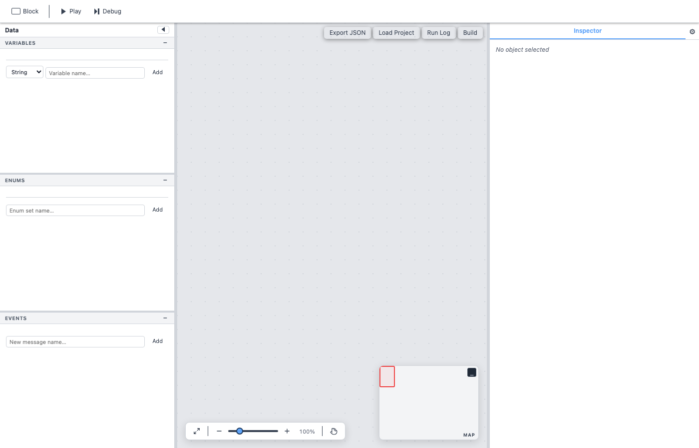

Son of Fungus

Son of Fungus is a visual scripting and flowchart authoring tool built entirely with standalone JavaScript, HTML, and CSS. It draws heavy inspiration from the popular Fungus package for Unity, but runs directly in any modern web browser with zero dependencies.
Whether you are building interactive fiction, branching dialogue, tutorial sequences, or lightweight game logic, Son of Fungus gives you a drag-and-drop canvas where you connect blocks of commands into expressive flowcharts — no code required.
At a Glance
A minimal flowchart with two connected blocks looks like this:
The blue block has a Game Started event, so execution begins there. A Call command connects it to the yellow Chapter 1 block.
Key Features
- Blocks & Commands — Build behaviour by snapping together reusable command cards (Say, Menu, Call, If/Else, audio, stage, and more).
- Variables, Enums & Events — Manage project state with typed variables (Boolean, Integer, Float, String, Enum), custom enums, and named events.
- Visual Flowchart Canvas — Drag blocks, zoom, pan, and see auto-drawn connections between blocks at a glance.
- Debug Mode — Step through execution one command at a time, inspect and edit variables live, and trace Call chains.
- Build to Standalone Runtime — Export your project as a single ZIP containing a self-contained HTML runtime with all audio and image assets.
- Load & Save — Projects are plain JSON. Export, import, paste, or choose from built-in examples.
- Responsive UI — Works on desktop and adapts to smaller screens with a collapsible sidebar.
Quick Links
- Getting Started — Create your first flowchart in minutes.
- Flowcharts — Learn about the canvas, zoom, minimap, and themes.
- Blocks — Understand block types, events, and naming.
- Variables, Enums & Events — Manage your project data.
- Commands Reference — Detailed docs for every command.
- Build Runtime — Ship a standalone HTML experience.